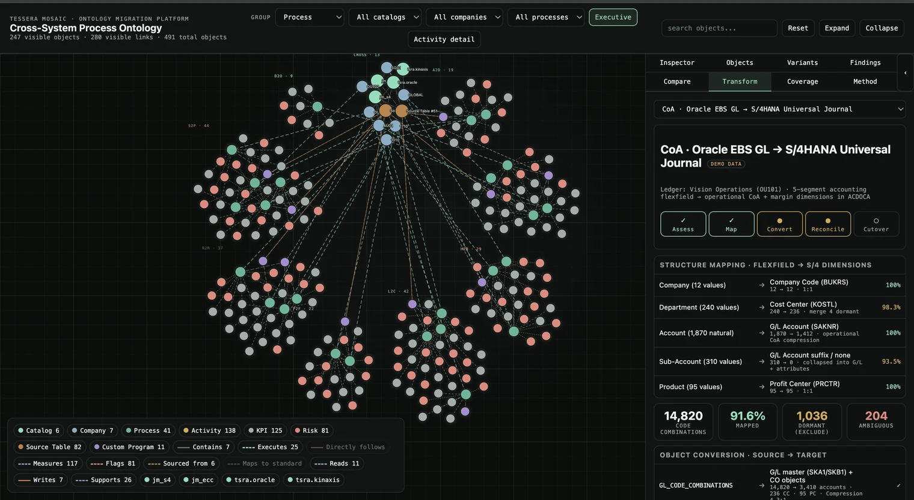
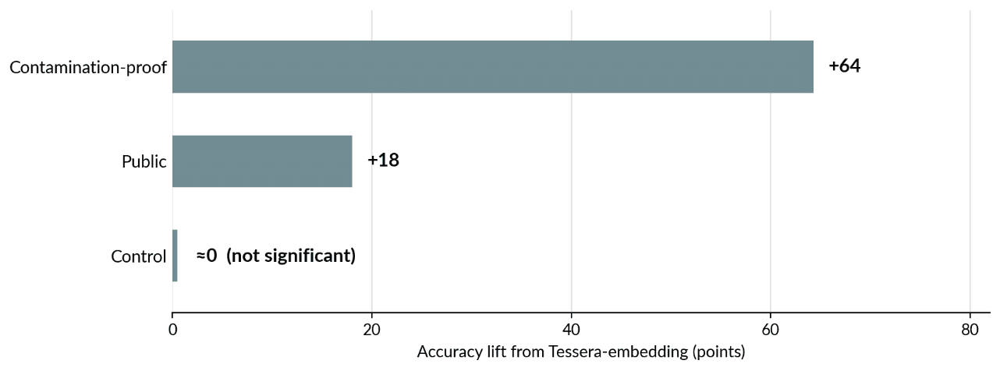
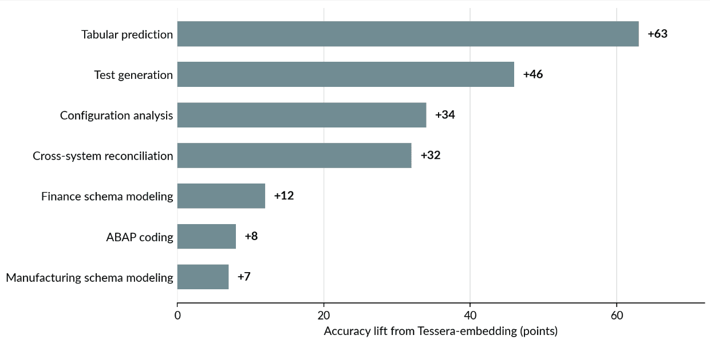
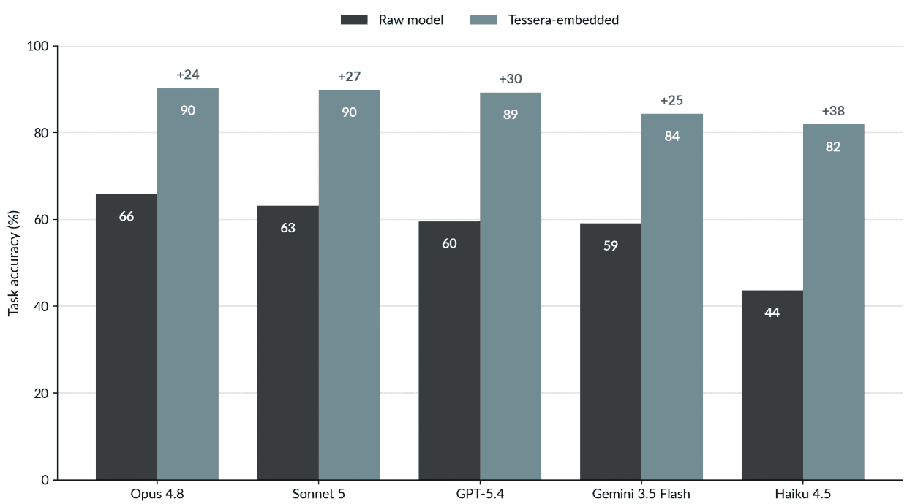

TL;DR
- Tessera introduces the Enterprise Transformation Index (ETI): a way to measure how much a model's real-world performance improves when paired with deep, accumulated enterprise context, rather than raw intelligence alone.
- To measure ETI, we built TILES: a new benchmark of 42 real enterprise-transformation tasks across seven suites, created because standard coding, reasoning, and computer-use benchmarks don't capture this kind of work.
- Across five frontier models, embedding with Tessera lifted ETI by +28.9 points on average.
Recent progress in frontier models suggests that intelligence is rapidly becoming a commodity. The proof is everywhere — models now prove theorems in mathematics, predict protein structures in biology, accelerate discovery across the physical sciences. The raw horsepower needed to solve a problem is no longer the primary constraint.
Enterprise transformation is a different kind of problem. It isn't the intelligence of natural law — uniform, and discoverable from first principles. It's the intelligence of a specific, path-dependent history that exists nowhere in any training corpus. Why was an integration configured this particular way? Why does a customization survive three system migrations while everything around it gets replaced? What looks irrational today is almost always the trace of a decision, constraint, or dependency set years ago — and no amount of raw reasoning recovers it. It has to be modeled.
That is what Tessera builds: an enterprise world model. It's a living representation of how a specific enterprise actually works — its systems, its dependencies, its decisions — assembled from domain-specialized datasets, process mining, enterprise entity graphs, and curated knowledge bases. Combined with the right model for reasoning and orchestration, it produces outcomes a general-purpose model cannot reliably reach on its own.
Intelligence is Horsepower; Wisdom is Knowing Where to Go
The best people — and the best systems — combine both intelligence and wisdom.
Intelligence is the ability to analyze, reason, generate, and solve problems. It's what frontier models do exceptionally well: synthesize documents, write software, decompose workflows, coordinate sophisticated sequences of actions. But intelligence alone is jagged, not uniform — a model can excel at a task and still know nothing about the specific system in front of it.
Wisdom is different. It's knowing not just what exists, but why: that two systems which look disconnected actually exchange data through a nightly batch job written a decade ago, and that the last time someone touched it, finance reconciliation broke.
Organizations build this kind of knowledge slowly. Every implementation, migration, audit, customization, and incident leaves behind another piece of context. None of it looks like much on its own — together, it's the operating system that lets people navigate an enterprise.

This wisdom rarely lives in one place. It's scattered across documentation nobody maintains, buried in the heads of people who've lived through past migrations, and encoded nowhere except the systems themselves.
Most progress in frontier models comes from making the model itself smarter — larger parameter counts, longer context windows, stronger reasoning, better tool use. That progress is real. But in enterprise automation, we've seen it hit a ceiling: a smarter model still can't reason about a history it's never seen. That's the problem Tessera is built to solve.
Inside the Enterprise World Model
We begin with a simple question: what actually exists?
In a large enterprise, the answer is scattered across source code, configuration tables, database schemas, documentation, and the memory of people who lived through the last three transformations.
Tessera connects to systems like SAP, Oracle, Salesforce, and Workday, converts their raw artifacts into structured form, and links them into an entity graph — objects within and across systems, shared processes like Order-to-Cash, and the custom code that touches each one. Specialized agents plan and act on top of that graph, drawing on organizational memory that sharpens with every engagement and a knowledge base of practitioner expertise general models don't have. Full architecture details are in our technical whitepaper.
That's the system whose performance we wanted to measure directly. We call the resulting metric the Enterprise Transformation Index, or ETI: not how intelligent the underlying model is, but how much accumulated enterprise context improves what it can actually do.
To measure ETI, we needed a benchmark built around real enterprise transformation work — not coding, web search, or computer use, which is where most frontier-model benchmarks focus. So we built TILES.
TILES: The Enterprise Benchmark
TILES, our enterprise benchmark, contains forty-two tasks drawn from real transformation work across seven suites: SAP ABAP Coding, SAP Configuration Analysis, Finance Schema Modeling & Cleansing, Manufacturing Schema Modeling & Cleansing, Cross-System Schema Reconciliation, Tabular Data Prediction, and Test Requirement & Test-Data Generation.
Each task was also labeled by class.
Contamination-proof tasks are tasks where the answer exists only inside the customer's environment, not seen in public training data. A raw model cannot know these answers in advance, only reasoning from given context.
Public tasks depend on general ERP knowledge. A strong model may already know the answer from public documentation, or at least have seen enough similar material during pretraining to make an informed attempt.
Control tasks are tasks where Tessera's knowledge base should not help. They are included as a guardrail. If embedding improves them too much, something is probably wrong: the system may be adding verbosity, leaking information, or shifting the grading rather than supplying useful knowledge.
We evaluated five frontier models in two configurations. In the first, the model was run directly on the task. In the second, the same model was embedded with Tessera's agent layer. Every task is graded against an expert-authored rubric where we decomposed a correct answer into discrete, verifiable claims and score the fraction satisfied, using a three-judge LLM ensemble (majority vote; judges disjoint from the models under test).
Across all seven suites and all five models, embedding the model in Tessera improved task accuracy by an average of 28.9 percentage points:
- On contamination-proof tasks, the lift was 64.3 points.
- On public tasks, the lift was 18.0 points. That is still meaningful, but it is smaller for the reason we would expect. Frontier models already know a fair amount about standard SAP behavior and published ERP concepts. Tessera still helps by embedding the answer and reducing ambiguity, but there is less missing knowledge to supply.
- On control tasks, the lift was 0.5 points and not statistically significant. That is the result we wanted to see. Tessera does not improve tasks that do not need Tessera. The knowledge base is not simply making answers longer or pushing the evaluator toward higher scores. It helps where enterprise knowledge is needed, and largely stays out of the way where it is not.
Full multi-agent architecture and per-suite analysis in our technical whitepaper.

We also analyzed the lift across suites. Tabular Data Prediction improved by more than sixty points. Test Requirement & Test-Data Generation improved by more than forty-five. SAP Configuration Analysis and Cross-System Schema Reconciliation both improved by more than thirty.

A concrete case. We asked a model to review a custom ABAP routine that runs after an S/4HANA conversion. On its own, even a strong model misses that an INSERT into the MSEG table now silently does nothing — in S/4HANA those tables became compatibility views over MATDOC, so goods movements vanish without an error. It's not a reasoning failure; the model has no way to know this specific system's behavior. Embedded in the knowledge base, the same model flags the silent data loss, cites the governing SAP Note, and recommends the fix. That is the difference between horsepower and knowing where to go.
Tessera is model-agnostic by design. The enterprise graph, knowledge base, and agent framework can embed different frontier models, with the benchmark illustrating improvement in every model.
But model-agnostic does not mean model-indifferent.
Once Tessera supplies the missing enterprise knowledge, the model still has to do the reasoning. That is where Claude was strongest.
Why Building With the Right Model Matters
Embedding the model in Tessera delivers a large, significant lift for every engine we tested. But model choice still shapes the outcome in two ways:
- The smallest model gained the most. Claude Haiku 4.5 was the lightest, least expensive engine, jumps +38 points with embedding.
- The strongest model sets the ceiling. Claude Opus 4.8 reaches the highest embedded accuracy of any engine tested (90.3%), with Claude Sonnet 5 just behind, because a stronger reasoner exploits the same knowledge more fully.

Tessera is able to give Claude a working picture of the enterprise ecosystem, including factors like how the systems depend on each other and what changed over time.
Claude turns that context into work. It reasons across the evidence, maintains the thread through long agentic workflows, follows constraints, uses tools, and produces recommendations that a human expert can inspect.
Together Tessera and Claude are complementary, allowing them to understand and reshape the sprawling systems a business depends on.
In these evaluations, Claude was a particularly strong engine for Tessera's platform. But the broader lesson is architectural: enterprise AI performance comes from aligning frontier model intelligence with the wisdom embedded in the platform around it.
Wisdom Compounds
Tessera's understanding of an enterprise improves the longer it works inside it.
Each engagement leaves behind more than a finished task. The platform learns which tables matter, which processes depend on them, which risks actually show up in migration, and which recommendations human experts accept or correct. That knowledge becomes part of the enterprise model.
That's why the advantage compounds. Each new engagement starts from everything the last one learned, instead of from zero.
That is the broader purpose of the Enterprise Transformation Index: to measure the performance of the combined system — not only the intelligence of the model, but its ability to use accumulated enterprise context to perform real transformation work. Raw intelligence will keep getting cheaper. The context that turns it into enterprise capability won't.